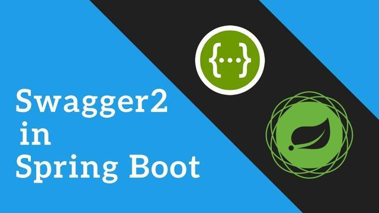
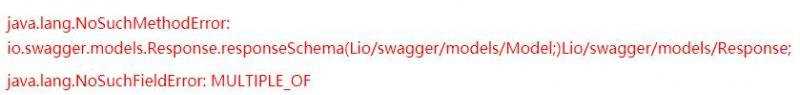
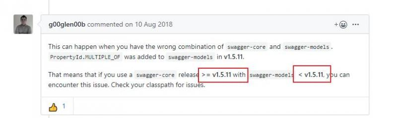
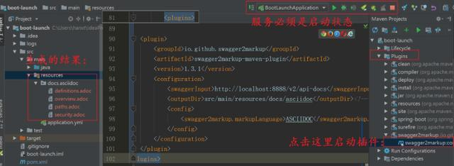
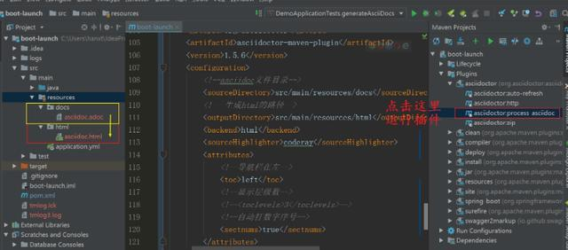
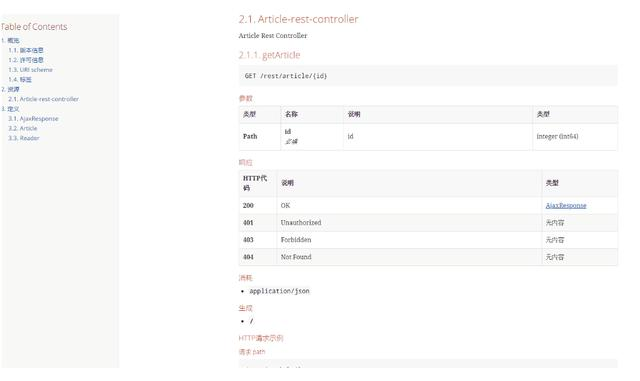

网上有很多《使用swagger2构建API文档》的文章，该文档是一个在线文档，需要使用HTTP访问。但是在我们日常使用swagger接口文档的时候，有的时候需要接口文档离线访问，如将文档导出为html、markdown格式。又或者我们不希望应用系统与swagger接口文档使用同一个服务，而是导出HTML之后单独部署，这样做保证了对接口文档的访问不影响业务系统，也一定程度提高了接口文档的安全性。核心的实现过程就是：
注意：adoc是一种文件格式，不是我的笔误。不是doc文件也不是docx文件。
在已经集成了swagger2的应用内，通过maven坐标引入相关依赖类库,pom.xml代码如下：
<dependency>
<groupId>io.github.swagger2markup</groupId>
<artifactId>swagger2markup</artifactId>
<version>1.3.1</version>
</dependency>
<dependency>
<groupId>io.swagger</groupId>
<artifactId>swagger-core</artifactId>
<version>1.5.16</version>
</dependency>
<dependency>
<groupId>io.swagger</groupId>
<artifactId>swagger-models</artifactId>
<version>1.5.16</version>
</dependency>swagger2markup用于将swagger2在线接口文档导出为html,markdown,adoc等格式文档，用于静态部署或离线阅读。其中第一个maven坐标是必须的。后两个maven坐标，当你在执行后面的代码过程中报下图中的ERROR，或者有的类无法import的时候使用。

产生异常的原因已经有人在github的issues上给出解释了：当你使用swagger-core版本大于等于1.5.11,并且swagger-models版本小于1.5.11就会有异常发生。所以我们显式的引入这两个jar，替换掉swagger2默认引入的这两个jar。

下面的代码是通过编码方式实现的生成adoc格式文件的方式
@RunWith(SpringRunner.class)
@SpringBootTest(webEnvironment = SpringBootTest.WebEnvironment.DEFINED_PORT)
public class DemoApplicationTests {
@Test
public void generateAsciiDocs() throws Exception {
// 输出Ascii格式
Swagger2MarkupConfig config = new Swagger2MarkupConfigBuilder()
.withMarkupLanguage(MarkupLanguage.ASCIIDOC) //设置生成格式
.withOutputLanguage(Language.ZH) //设置语言中文还是其他语言
.withPathsGroupedBy(GroupBy.TAGS)
.withGeneratedExamples()
.withoutInlineSchema()
.build();
Swagger2MarkupConverter.from(new URL("http://localhost:8888/v2/api-docs"))
.withConfig(config)
.build()
.toFile(Paths.get("src/main/resources/docs/asciidoc"));
}
}@Test
public void generateMarkdownDocsToFile() throws Exception {
// 输出Markdown到单文件
Swagger2MarkupConfig config = new Swagger2MarkupConfigBuilder()
.withMarkupLanguage(MarkupLanguage.MARKDOWN)
.withOutputLanguage(Language.ZH)
.withPathsGroupedBy(GroupBy.TAGS)
.withGeneratedExamples()
.withoutInlineSchema()
.build();
Swagger2MarkupConverter.from(new URL("http://localhost:8888/v2/api-docs"))
.withConfig(config)
.build()
.toFile(Paths.get("src/main/resources/docs/markdown"));
}上面的这一段代码是生成markdown格式接口文件的代码。执行上面的2段单元测试代码，就可以生产对应格式的接口文件。
还有一种方式是通过maven插件的方式，生成adoc和markdown格式的接口文件。笔者不常使用这种方式，没有使用代码生成的方式配置灵活，很多配置都放到pom.xml感觉很臃肿。但还是介绍一下,首先配置maven插件swagger2markup-maven-plugin。
<plugin>
<groupId>io.github.swagger2markup</groupId>
<artifactId>swagger2markup-maven-plugin</artifactId>
<version>1.3.1</version>
<configuration>
<swaggerInput>http://localhost:8888/v2/api-docs</swaggerInput><!---swagger-api-json路径-->
<outputDir>src/main/resources/docs/asciidoc</outputDir><!---生成路径-->
<config>
<swagger2markup.markupLanguage>ASCIIDOC</swagger2markup.markupLanguage><!--生成格式-->
</config>
</configuration>
</plugin>然后运行插件就可以了，如下图：

<plugin>
<groupId>org.asciidoctor</groupId>
<artifactId>asciidoctor-maven-plugin</artifactId>
<version>1.5.6</version>
<configuration>
<!--asciidoc文件目录-->
<sourceDirectory>src/main/resources/docs</sourceDirectory>
<!---生成html的路径-->
<outputDirectory>src/main/resources/html</outputDirectory>
<backend>html</backend>
<sourceHighlighter>coderay</sourceHighlighter>
<attributes>
<!--导航栏在左-->
<toc>left</toc>
<!--显示层级数-->
<!--<toclevels>3</toclevels>-->
<!--自动打数字序号-->
<sectnums>true</sectnums>
</attributes>
</configuration>
</plugin>adoc的sourceDirectory路径必须和第三小节中生成的adoc文件路径一致。然后按照下图方式运行插件。

HTMl接口文档显示的效果如下，有了HTML接口文档你想转成其他各种格式的文档就太方便了，有很多工具可以使用。这里就不一一介绍了。
